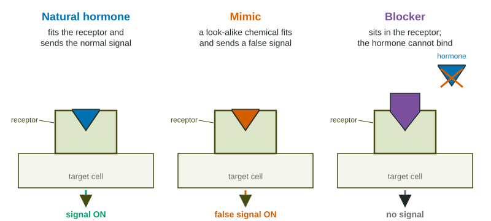

Your body runs many of its long-term processes, such as growth, puberty, reproduction and metabolism, with chemical messengers called hormones. The glands that make them form the endocrine system. Some pollutants interfere with those messages. They are called endocrine disruptors.
How hormones work, and how disruptors interfere

A hormone travels in the blood and fits a receptor on or in its target cells, like a key in a lock. The fit switches on a response. An endocrine disruptor can interfere in three ways:
- Mimic: it is shaped enough like the hormone to fit the receptor and switch it on at the wrong time. Estrogen mimics can make male fish grow egg cells.
- Block: it sits in the receptor without switching it on, so the real hormone cannot act.
- Alter production: it changes how much hormone a gland makes or how fast the body breaks it down.
Hormones are measured in parts per billion or less in the blood. Because the body's own hormones work at tiny concentrations, disruptors can have effects at very low doses, and effects are often strongest during development: in eggs, embryos and the young.
Examples and sources
| Chemical | Where it comes from | Effects linked to it |
|---|---|---|
| Atrazine | a widely used herbicide; runoff from fields | abnormal sex organs in frogs in some studies |
| BPA and phthalates | some plastics, can linings, vinyl | reproductive and developmental effects |
| Some flame retardants and industrial chemicals | furniture foam, electronics, factory waste | thyroid hormone effects |
| Synthetic estrogen | birth control pills, passed into wastewater | intersex fish below wastewater outfalls |
Reading the evidence
Worked example: a share. At a wastewater outfall, 26 of 40 male bass had egg cells. What percent is that?
Setup: . Answer: , compared with 2 of 40 (5%) upstream.
Field data like these show a strong link between the outfall and intersex fish. To show that a chemical causes the effect, scientists run controlled experiments: groups of fish or frogs raised at different doses, with a control group at zero dose as a baseline, and other conditions such as temperature and food kept the same.
Why they are hard to manage
Endocrine disruptors are tricky for regulators for three reasons. First, the doses that matter can be far below the levels at which chemicals are usually tested for harm, so a chemical judged safe by older tests may still disrupt hormones. Second, timing matters: the same dose that does little to an adult can change the development of an embryo or a tadpole. Third, there are thousands of chemicals in everyday products, and many have never been tested for hormone effects. That is why careful experiments, with a zero-dose control and several doses, are central to this topic, and why exam questions often ask you to design or read one.
Reducing exposure
Responses include banning or limiting the worst chemicals, extra cleaning steps at wastewater plants (activated carbon, ozone), take-back programs so unused medicines are not flushed, and safer substitutes in plastics and pesticides.